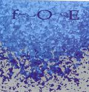

| Artist: | Foe |
| Title: | Arm Yourself With Clairvoyance |
| Label: | House Of Stairs HOS003 |
| Length(s): | 32 minutes |
| Year(s) of release: | 2003 |
| Month of review: | [11/2003] |
| 1) | Bloodmoss | 3.51 |
| 2) | Tialys And Salmakia | 1.49 |
| 3) | Ted Parsons (And How To Live It) | 7.19 |
| 4) | It's Been A Hard Year For Mr David Cyberman | 1.12 |
| 5) | Triangulator | 5.39 |
| 6) | Wasp-eating Bulldog | 3.18 |
| 7) | Pick On God God For A Good Laugh | 9.10 |
On Tialys And Salmakia the tempo changes occur often enough, even in a song of such small length. The next one is quite a bit longer, Ted Parsons (And How To Live It). If you need comparisons for this angry young band, then I guess the instrumental side of Magna Carta, Rush and the likes of modern day King Crimson come closest. The playing here is sharp and takes few prisoners. Melody sometimes shines through, but usually in a not too obvious way. This means that if you go for melody you either listen very well, or not at all. In my opinion this band works mostly on energy and flashy playing. I for one could do with some more melody.
It's Been A Hard Year For Mr David Cyberman seems to open atmospherically, but this is soon over, we end up in pace guitar riffing and busy drums, just like in the previous three tracks.
Triangulator opens with tense guitar lines, in the vein of the THRaKaTTaK side of King Crimson. The following passage is in a way even funny.
The opening of Wasp-eating Bulldog is for the rhythm section. Again notes flash us by in masses, but underneath it all lies a certain urgency, a drive that makes it all listenable. In the middle the music falls away to return in a noisy distorted fashion. Or did someone unplug something at the wrong time?
Pick On God God For A Good Laugh is the long closing title. There are times when the band takes a little rest here along the way, but not that often and not that long. This can be said for the album as a whole. Some of the riffs are very Crimsonesque. Past halfway the playing straggles as it slowly ponderously heavily proceeds, until of course it is time to get the pace up. We end atmospherically.